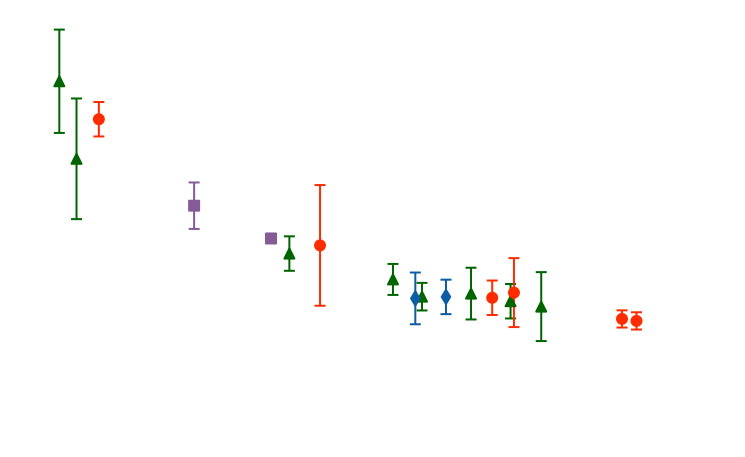
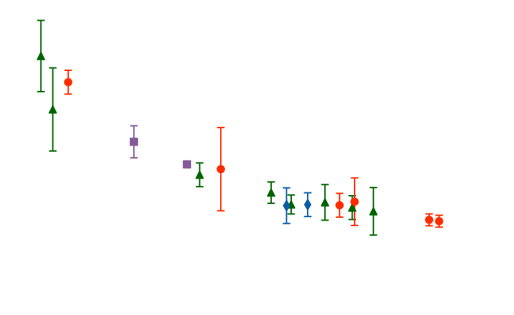

 
| Plant | Type | Treatment | conc | uptake |
|---|---|---|---|---|
| Qn1 | Quebec | nonchilled | 95 | 16.0 |
| Qn1 | Quebec | nonchilled | 175 | 30.4 |
| Qn1 | Quebec | nonchilled | 250 | 34.8 |
| Qn1 | Quebec | nonchilled | 350 | 37.2 |
| Qn1 | Quebec | nonchilled | 500 | 35.3 |
| Qn1 | Quebec | nonchilled | 675 | 39.2 |
Strong Interactions need Strong Machines
The Lattice QCD approach
September 4, 2025
Outline
- Quantum ChromoDynamics in the continuum
- Why QCD is challenging
- The lattice QCD approach and Monte Carlo simulations
- The need for supercomputers
- Open questions and challenges

Chiral symmetry breaking in real QCD
- Spontaneous breaking
- \(\small \langle \bar{\psi}\psi \rangle \neq 0\) (non-trivial QCD vacuum)
- \(\small \mathrm{SU}(2)_V \times \mathrm{SU}(2)_A \times \mathrm{U}(1)_V
\;\;\longrightarrow\;\; \mathrm{SU}(2)_V \times \mathrm{U}(1)_V\)
- 3 Nambu–Goldstone bosons ⇒ the pions
- \(\small \langle \bar{\psi}\psi \rangle \neq 0\) (non-trivial QCD vacuum)
- Explicit breaking
- light quark masses \(\small m_{u,d} \neq 0\)
- GMOR: \(\small{ M_{\pi}^2 = (m_u + m_d)}\frac{\large \langle \bar{\psi}\psi \rangle}{\large f_{\pi}^2} \simeq 135 \mathrm{\, MeV}\)

Interactions in QCD
Gauge invariance not only dictates the kinetic terms, but also fixes the interaction structure:
\(\small \sim g \bar{\psi}\psi A\)
\(\small \sim g \partial A A A \quad \quad \quad \sim g^2 AAAA\)


- QED-like vertex
- quark–gluon interaction
- analogous to electron–photon in QED
- quark–gluon interaction
- New in QCD
- 3-gluon and 4-gluon self-interactions
- consequence of non-abelian \(\mathrm{SU}(3)_C\)
- lead to confinement, asymptotic freedom, glueballs…
- 3-gluon and 4-gluon self-interactions
Quantum corrections lead to divergencies:
Interactions are treated in the renormalization framework → running of the coupling \(g(\mu)\).
Running of the Coupling
- Scale dependent coupling: \(\small g \,\longrightarrow\, g(\mu)\)
- Governed by the β-function:
\[\small \mu \frac{dg}{d\mu} = \beta(g), \quad \beta(g) = -\beta_0 \frac{g^3}{16\pi^2} + \mathcal{O}(g^5) \] with \(\small \;\beta_0 = 11 - \tfrac{2}{3} N_f\)
- Solution at 1-loop:
\[\small \alpha_s(\mu) \equiv \frac{g^2(\mu)}{4\pi} = \frac{1}{\beta_0 \ln(\mu^2 / \Lambda_{\text{QCD}}^2)} \]
- Consequences:
- \(\small \mu \to \infty \;\;\Rightarrow\;\; \alpha_s(\mu) \to 0 \;\Rightarrow\; \color{#EB811B}\text{asymptotic freedom}\)
- \(\small \mu \to \Lambda_{\text{QCD}} \;\;\Rightarrow\;\; \alpha_s(\mu) \to \infty \;\Rightarrow\; \color{#EB811B}\text{confinement}\)
QCD becomes strongly coupled in the IR → non-perturbative tools are required!
Confinement
- As \(\small \alpha_s(\mu) \to \infty\) at low energies → quarks and gluons cannot propagate as free states
- QCD potential:
\[\small V(r) = -\,\frac{4}{3}\frac{\alpha_s}{r} + \sigma r \quad \quad \quad \;\sigma \approx 0.9\ \mathrm{GeV/fm} \]
- Force:
\[ \small |dV/dr| \approx 0.9 \times 1.6\cdot10^{-10} \text{J}/10^{-15}\ \text{m} \approx 1.6\cdot10^{4}\ \text{N} \]

- Only color-singlet bound states are physical:
- mesons (\(q\bar q\))
- baryons (\(qqq\))
- glueballs (\(gg, ggg,\dots\))
- mesons (\(q\bar q\))
- No direct experimental evidence of isolated quarks
- jet formation in high-energy collisions
- linear potential at large distances (\(V(r) \sim \sigma r\))
- jet formation in high-energy collisions

Particle Data Group

Take-home: Confinement is a genuinely non-perturbative feature of QCD,
responsible for the hadronic spectrum and absence of free quarks.
Images

Random Image from Picsum
References